< < < Back
Why Is Rebecca Sparrow Attacking Young Moms For Staying Slim And Pretty? – Return Of Kings

Most anyone who’s involved in fitness in one form or another has invariably run upon motivational pictures such as these:
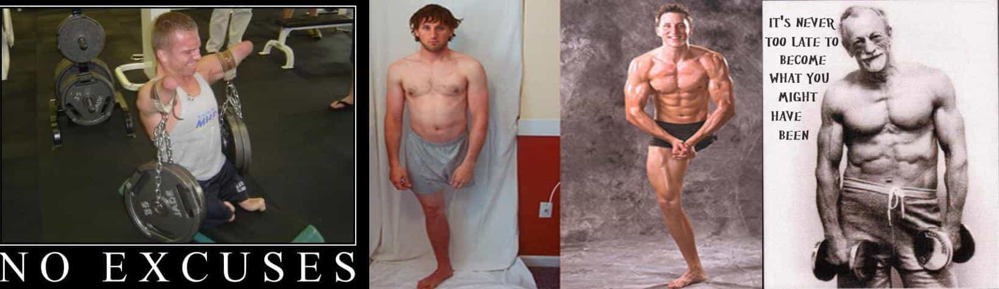
Or have seen videos of older gents who chose to work hard and be in wicked shape at a time in their lives when most of their similarly aged peers are barely functioning messes suffering from their first major health issues caused by years of laziness and gluttony.
Pictures and videos like the ones above are designed to inspire people to get in shape, to cast aside their cheap excuses and hit the gym to physically be all that they can be. None of these motivational images and videos are considered controversial since they’re mostly aimed to inspire (shame into action) men – and if there’s one thing our current society loves, it’s the man up mantra.
However, what is ‘controversial’ is when women do the same thing to inspire other women. Enter Maria Kang.
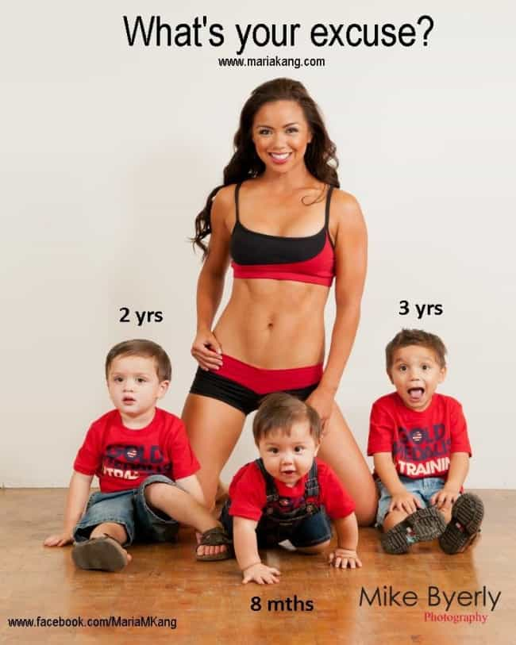
Fine ass momma Maria Kang learned the hard way what happens when you try to inspire fat, indolent, spoilt, lazy women into improving their lives. When Maria released the above picture as a rebuttal to the countless women who use pregnancy and motherhood as an excuse to indulge in reckless eating habits and then simply allow themselves to remain obese after being pregnant and rearing children, the internet jumped down her throat. Facebook even banned her temporarily.
Accusations and insults of every stripe were hurled at Maria while sassy women hit back hard with scathing editorials which made complete sense and didn’t just prove Maria’s point that all these offended women were just lazy, selfish and making excuses.
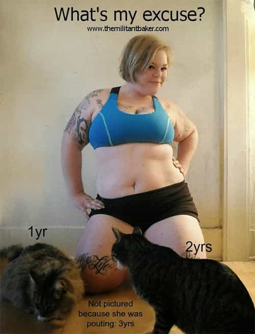
Pictured: Real Woman, real sass
Apparently it’s controversial for an in shape woman to show others that, even after three kids, you can still be a killer babe so long as you exercise and eat right – and marry young. Maria became a mother in her 20s, like nature intended and thus built women’s bodies for.
But those fit young mothers, they just never learn do they? Soon after the horrifying crime against humanity that was Maria’s fat shaming picture, Caroline Berg Eriksen contributed her very own screw you to the human race in the form of a selfie taken just days after she gave birth at the damn near paedophilic age of 26.
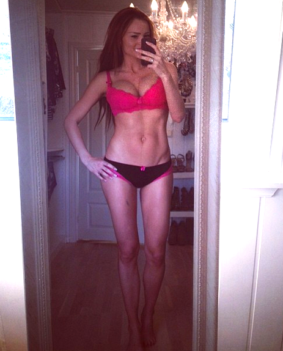
Wow just…wow… Like, SERIOUSLY Caroline? You and all you other fit girls having healthy children in your youth need to stop posting these pictures trying to inspire women to marry young, stay in shape and have children at the peak of your child bearing years.. You’re not real women. You’re waging a war on real women. As published authour Rebecca Sparrow said, in her article titled the same: This is not a selfie. This is an act of war against women.
Oh? What’s that? You’ve never heard of Rebecca Sparrow? Well let me tell you who she is.
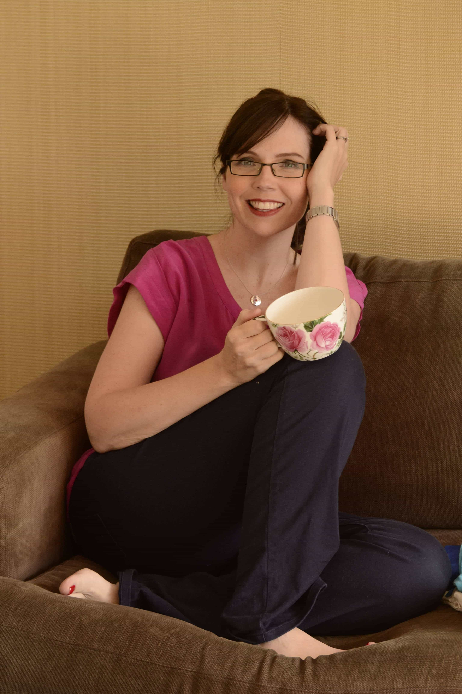
Fat legs which have never felt a weighted squat in their life and a teacup you could fit your head into because hey! You gotta have room for all that heavy cream and sugar
Introducing Rebecca Sparrow
Rebecca Sparrow is a chubby middle aged woman who had her first kid when she was 37 but only after hitting the wall face first at Mach 3. And yes, all signs do point to her having spent her youthful years sleeping with strangers. Rebecca Sparrow is emotionally damaged and despite the success of being a published authour married to a chump beta husband who is a doctor, never having to work a real job for any amount of time in her life, and being carried through her life by her parents, she is still so petty and unhappy with herself that when Caroline proudly showed off the results of her years of hard work, dedication and will power, Rebecca had to write an article where she thinks Caroline’s photo is, quote, “fucked up.”
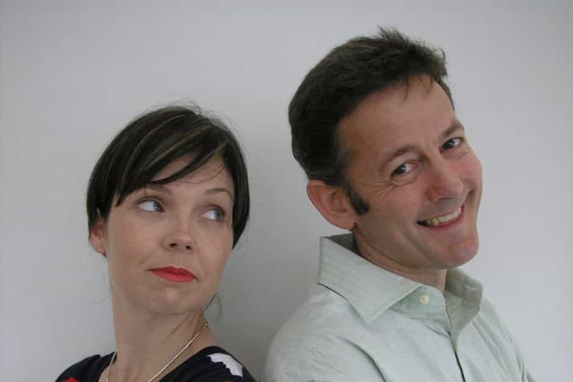
My grandmother looked more youthful in my baby pictures.
Unfortunately, to really get my point across about what kind of women try to shame the Kang’s and Eriksen’s of the world, I have to dig a little deeper into the scar tissue that is Rebecca Sparrow’s life. I’m an agnostic man by nature but getting to know Rebecca more intimately has certainly pushed me a few points closer to full blown nihilistic, angry atheism. Her life reads as a feminist cliché so stereotypical that even the most vitriolic misogynist would have trouble believing such a two-dimensional creature exists.
A brief biography of a selfish woman
Like most insufferable women, Rebecca’s biggest dreams as a child were being a famous star – and thanks to her rich parents, she made slightly more headway then most. She never made it obviously, and instead decided to get a degree in Communications. Clearly student debt wasn’t a problem or a concern for Rebecca because her jobs after university included such high paying gigs as writing media releases, feature articles, speeches, and newsletters for The Australian Red Cross, The Flight Centre Group, The Nine Network, and the British Millennium Commission. Rebecca spent her youth frivolously chasing whatever dream job of the week she fancied in between stuffing her maw with cup cakes, partying it up with her BFF’s of the weekend and dating mysterious bad boys.
Note the nose piercing and blatant slut face – I wonder what tattoo she has on her buttcheek, star or butterfly?
Eventually she wound up marrying one of the bad boys she loves so much after her debt-ridden celebritism-chasing wanderlust brought her to Las Vegas. The wedding didn’t last and Rebecca wound up back at home living with her parents. Eventually she got into another confirmed relationship with another bad boy, dumped him, published a book and then after taking awhile off to live the life of a Sex and the City style socialite she hit the jackpot and met her doctor husband. All that long, hard work of… not having to do long, hard work finally paid off.
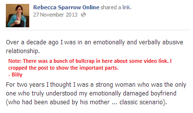
Rebecca was 32 or 34 when that relationship ended – she doesn’t make it clear; for an authour who loves to talk about herself there is a telling amount of omission about her youthful years. She did meet her doctor husband when she was 35. How must her current husband feel when he reads how, by her own admissions, Rebecca let herself get tapped out by lord knows how many bad boys in her youth? How must it make him feel to know that she stayed with at least one ‘emotionally damaged’ bad boy for 2 years.
You know they were banging like rabbits the whole time. I wonder how much begging her doctor husband has to do just to have some missionary once in awhile. I wonder if he ever stops and thinks how, after all his years at medical school, he’d wind up with a once divorced party girl who gave her best years to losers whom she stayed with just because they made her wet and boosted her ego.
As soon as she hit the wall, when she was no longer a part of the cool age or even passably hot, Rebecca decided to start having kids at 37. Then she turned around and joined a mommy blog and now acts like her kids are the most important thing to her – she just couldn’t, you know, be bothered to have any until she knew her party years were far behind her. Mommy needed all those decades to find herself; even if it means she has risked her children’s lives by staving off her pregnancies to old age. Rebecca has had one stillborn child.
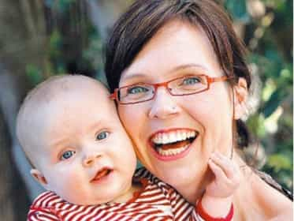
Motherhood as hissed by a serpent
So Rebecca made it to a good life with no effort. Thanks to her chump of a husband’s wealth and her own moderate success as an authour Rebecca gets to stay home with kids she compares to dictators because they actually make her do some of the hard work she’s avoided all her life.
“I have a habit of comparing my four-year-old to deceased foreign megalomaniac dictators.
I have, in conversation and online, likened my daughter Ava to Stalin, Idi Amin and, yeah okay, Pol Pot….
…at the end of some looooong days with a 12-month-old and a four-year-old I want to sit under the dining room table with a bottle of gin and have a cry.”
Mother of the year. Hey kids, did you know you make mommy so frustrated and depressed that she wants to go back to all that hard drinking she spent her teens, twenties and early thirties doing?! Don’t forget, Rebecca essentially has no responsibilities outside of being a mother. Money is not an issue as her involvement in numerous charities shows, and her husband isn’t practicing charity OBGYN at the private hospital where he works. Her daily job solely consists of making sure her kids don’t stick their tongues in the electrical socket and don’t starve to death.
I’m reminded a lot of a different authour in a similar situation. Stephen King faced some very trying times when he was a beginning writer; he had a couple of kids with all the headaches that involved, his family was actually broke with no rich mommy and daddy to bail him out, he worked full time as a teacher while his wife worked in the service industry and Stephen did all his writing on a typewriter balanced on his legs in a small room in a small trailer home while struggling with drug use and alcoholism the whole time. And yet I’ve never read any personal works of his that mentions hating his family so much that he actually checked into a hotel just to get away from them for a day.
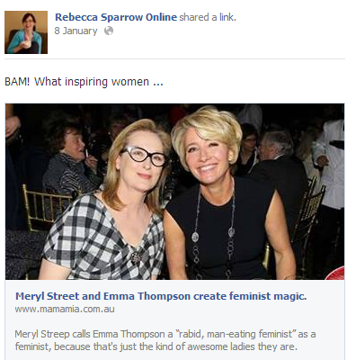
BAM! Look at the type of people Rebecca views as inspiring…
“On 17th January, FLOTUS of Awesome turns 50. FIFTY! And you know what she’s doing? Strike that. Let me tell you what she’s not doing. She’s not arguing with Barack over whether to watch a rom-com or Something Something Something Guns Armageddon Amnesia Explosion Mistaken Identity Sexy Double Agent Who Takes A lot of Sexy Showers Bad Russian Accent Matt Damon. Or conversely being made to sit through some B-grade 1970s horror movie where the monster is really just a Labrador dressed up in a wig.
She’s not spending her evening making Moroccan Chicken only to have her kids say “I hate chicken” or “I hate Morocco” (You hate Morocco? What the f?)
She’s not sitting through a puppet show or proofing a high school assignment on the secret life of ants or walking around the school netball courts searching for Malia’s school tracksuit jacket or trying to read a chapter of Goldfinch only to be interrupted 27 TIMES by every member of her family. She’s not looking at someone’s bottom because “It’s itchy, mama”. She’s not going to the toilet with AN AUDIENCE.
Nope FLOTUS is having a holiday in Hawaii with Oprah and her girlfriends. AND NOT HER HUSBAND AND CHILDREN.
I’m so delighted by that I want to high-5 my computer screen.”
Reading that the first time made me want to scrub myself down in a cold shower. Those are Rebecca’s own words, unfiltered, unedited. Soak in Rebecca’s bitterness at actually having to watch something her hard working doctor husband wants to watch (I wonder what kind of shows Rebecca watched with her old bad boy boyfriends while she gave them a BJ on the couch). Look at how ungrateful she views her kids as being for not liking her kitschy food – she’s angry at kids under seven for acting like, you know, kids under seven do. She hates being interrupted while reading a book, she hates her kids bugging her because their bodies are infected, she hates not being able to drop a deuce alone. This is a woman who is so frustrated with her family that she has to capitalize the fact that her aristocratic heroine IS NOT GOING TO BE AROUND HER HUSBAND AND CHILDREN FOR AWHILE.
Rebecca’s so delighted to just hear about another do nothing woman escaping her family that she wants to high five her computer screen. Remember, these are the words of a 42 year old mother of three.
“…kids are annoying and at some point you would rather stick your head in the oven than sit through yet another flute recital.
Last year for my birthday, you know what I did?
I went and stayed in a hotel BY MYSELF.
I had a beautiful morning with my family and then with a song in my heart I hit the road and checked into a hotel for 24 hours of NOT BEING A SHERPA.
And it was front-row-tickets-to-Beyonce-kind-of-awesome.”
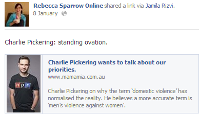
Standing ovation Charles for saying domestic violence never happens to men – or maybe Rebecca doesn’t care that it does
Rebecca Sparrow represents women at their worst
Rebecca Sparrow is living the feminist dream, all pleasure with zero responsibilities or accountability. Hell, she even has mild celebrity status to boot. Yet she’s still a bitter, hateful human being.
Rebecca perfectly encapsulates the majority of today’s women and feminists as a whole. She threw away her youth on strange men and hard partying, holding out in that lifestyle until the absolute last possible second at which point she then married a rich beta chump and began to pump out some children so she could check off FAMILY on her bucket list.
Rebecca doesn’t care about her children – they’re nothing more than a status symbol for her. With no real responsibilities, she can’t even make the minimum efforts to stay in shape to give them a positive body image to strive for or to reward her husband’s faithful dedication to his family by being a woman he’d actually be proud of making love with. She selfishly chose not to give her children a youthful, vibrant mother – when her (currently) youngest child goes up to get his high school diploma and looks into the crowd at his mother, he’ll see a 60 year old woman who looks worse than an 80 year old 19th century peasant sitting in the seats watching him.
And that fact infuriates Rebecca to no end. That’s why when she—and the masses of women with the same attitude as her—are exposed to the shining examples of real women like Maria Kang and Caroline Berg Eriksen they go into full DEFCON 1. For all their successes, for all the lack of actual hardship and sadness the spoilt legions of Rebecca Sparrow’s out there face, when they see a woman who selflessly gives her man her prime years and bears his children at a youthful age – all while staying sexually attractive for him through sheer will power and hard work – they recognize exactly how big of failures of women they themselves actually are. These creatures know that no matter how much partying they got in or how much success they garner in their career, they will never look as beautiful or feel as happy as a young physically fit mother is strolling her baby down the street.
They will never have the admiration that normal, well adjusted people hold for such wonderful women. They know their chump husbands will never have that genuinely satisfied look holding their bloated marshmallow bellies as a man does wrapping his hands around the young, tight skin of his young selfless wife.
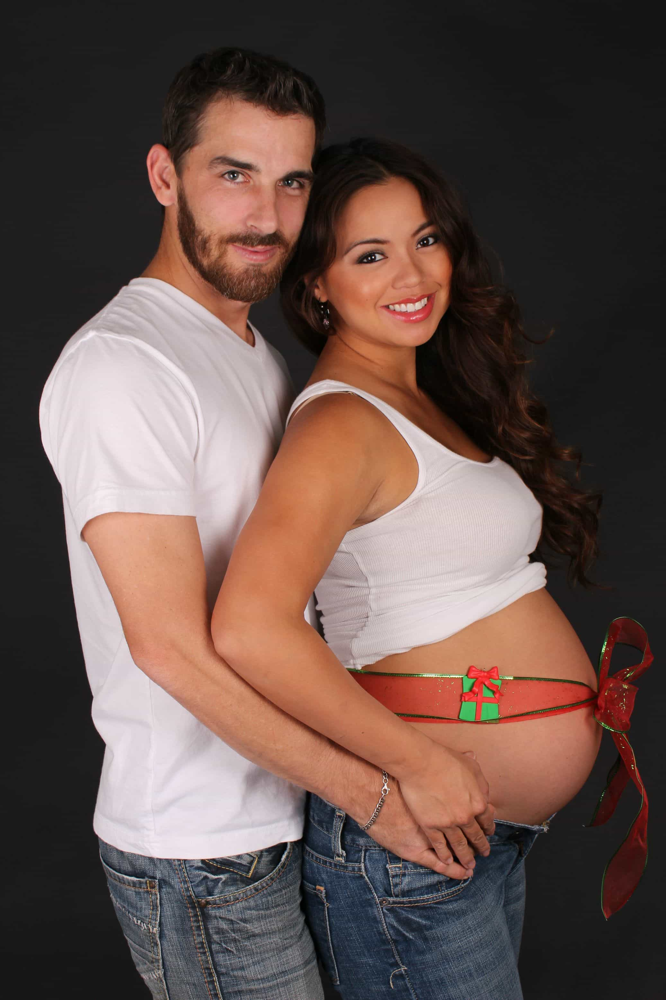
Rebecca Sparrow and the women like her are the ones who shape and control the corrupted narrative around today’s women. They don’t want young women to become married mothers before 30. They don’t want women to be in shape. They want all women to be the same doughy, aged, used-up party girls that they are so that they don’t have to come to grips with the fact they are the ones who are selfish, that they are failures of wives and mothers creating weak families. An entire lifetime of non-stop partying with no financial worries, a successful career as a novelist, a doctor husband, children conceived at extreme age—Rebecca Sparrow has all these things to lean upon and all it took to make her furious and depressed was one single image of a young mom in good shape.
So Rebecca and the depressingly large number of women like her lash out against the Kang’s and Eriksen’s of the world, trying to disqualify these women’s admirable lifestyles by saying outright lies like good health and fitness is out of the reach so women shouldn’t bother trying to reach it in the first place. They say that Kang and Eriksen are genetic freaks, they use language against them that borders on calling those young married mothers inhumane bimbos. It is thanks to women like Rebecca Sparrow that young girls nowadays feel like they have to be whores who must give up their bodies to bad boys in order to live a full empowered life, even though most normal women want nothing more than to be a housewife by twenty-five with a couple of little rug-rats crawling around their feet. There’s nothing wrong with women wanting that.
Who would the women of today rather be? The women that live their lives selfishly like Rebecca Sparrow, hoping they’ll undeservedly luck out in the end? Or would they rather be the other ones; the ones whose hard work, selflessness and whose mere existence inspires equal measures of jealousy and wrath in the Becca’s of the world? Wouldn’t they rather be the women whose husbands look forward to coming home to them, whose children will grow up and see their beautiful mother, still in her forties, beaming proudly up at them at their graduations? Wouldn’t they rather be happy in a strong family that unflinchingly loves and adores them rather than being a farce of a woman who stencils crap like Live. Laugh. Love. on the wall before going on her blog and belittling fit, young mothers for having the strength and good sense they’ll never possess?
I know who Rebecca Sparrow wants to be.
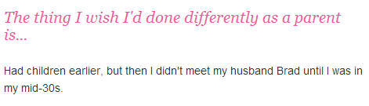
Are you on Twitter? Discuss this post using the hashtag #BackToTheKitchen.
Read More: The Most Abominable Christian Wife On The Internet


{kind=link}
{kind=link}
{kind=link}
{kind=link}
{kind=link}
{kind=link}
{kind=link}
{kind=link}
{kind=link}
{kind=link}
{kind=link}
{kind=link}
{kind=link}
{kind=link}